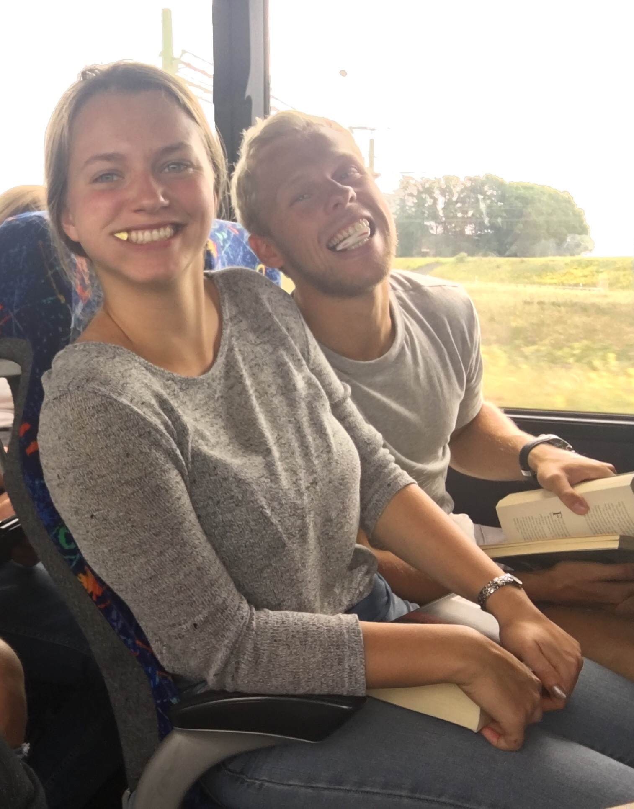

Sophie Lund Schroder
Astrophysics PhD student
DARK, Niels Bohr Institute
University of Copenhagen
Hello!
I am a third year combined master and phd student in Astrophysics at University of Copenhagen, and I'm currently working with Prof. Enrico Ramirez-Ruiz on transients. I graduated from Cornell in 2016 with a BA in Physics, and I'm very happy to be back on the West Coast for grad school (I'm from Davis originally). Outside of research I love playing soccer, hiking, swimming in the ocean, and generally exploring all the great nature California has to offer.
See my work 